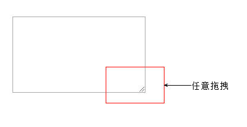
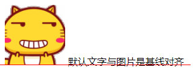

1.概述
在实战中，CSS中有一些技巧，用来解决常见场景中的问题。
2.元素显示与隐藏
目标：让一个元素在页面中消失或者显示出来
场景：类似网站广告，当我们点击关闭就不见了，但是我们重新刷新页面，会重新出现！
| 属性 | 区别 | 用途 |
|---|---|---|
| display | 隐藏对象，不保留位置 | 配合后面js做特效，比如下拉菜单，原先没有，鼠标经过，显示下拉菜单， 应用极为广泛 |
| visibility | 隐藏对象，保留位置 | 使用较少 |
| overflow | 只是隐藏超出大小的部分 | 1. 可以清除浮动 2. 保证盒子里面的内容不会超出该盒子范围 |
2.1 display 显示（重点）
1
2
3
4
5
/* 隐藏对象 */
display: none
/* 除了转换为块级元素之外，同时还有显示元素的意思 */
display：block
- 特点： 隐藏之后，不再保留位置。

实际开发场景：配合后面js做特效，比如下拉菜单，原先没有，鼠标经过显示下拉菜单， 应用极为广泛
2.2 visibility 可见性 (了解)
设置或检索是否显示对象。
1 2 3 4
/* 对象可视 */ visibility：visible ; /* 对象隐藏 */ visibility：hidden;
特点： 隐藏之后，继续保留原有位置。（停职留薪）

2.3 overflow 溢出(重点)
- 检索或设置当对象的内容超过其指定高度及宽度时，如何管理内容。
| 属性值 | 描述 |
|---|---|
| visible | 不剪切内容也不添加滚动条 |
| hidden | 不显示超过对象尺寸的内容，超出的部分隐藏掉 |
| scroll | 不管超出内容否，总是显示滚动条 |
| auto | 超出自动显示滚动条，不超出不显示滚动条 |

实际开发场景：
- 清除浮动
- 隐藏超出内容，隐藏掉, 不允许内容超过父盒子。
3. CSS用户界面样式
目标：所谓的界面样式， 就是更改一些用户操作样式，以便提高更好的用户体验。
- 更改用户的鼠标样式 (滚动条因为兼容性非常差，我们不研究)
- 表单轮廓等
- 防止表单域拖拽
| 属性 | 用途 | 用途 |
|---|---|---|
| 鼠标样式 | 更改鼠标样式cursor | 样式很多，重点记住 pointer |
| 轮廓线 | 表单默认outline | outline 轮廓线，我们一般直接去掉，border是边框，我们会经常用 |
| 防止拖拽 | 主要针对文本域resize | 防止用户随意拖拽文本域，造成页面布局混乱，我们resize:none |
3.1 cursor 鼠标样式
设置或检索在对象上移动的鼠标指针采用何种系统预定义的光标形状。
| 属性值 | 描述 |
|---|---|
| default | 小白 默认 |
| pointer | 小手 |
| move | 移动 |
| text | 文本 |
| not-allowed | 禁止 |
鼠标放我身上查看效果哦：
1
2
3
4
5
6
7
<ul>
<li style="cursor:default">我是小白</li>
<li style="cursor:pointer">我是小手</li>
<li style="cursor:move">我是移动</li>
<li style="cursor:text">我是文本</li>
<li style="cursor:not-allowed">我是文本</li>
</ul>
3.2 outline 轮廓线
轮廓线是绘制于元素周围的一条线，位于边框边缘的外围，可起到突出元素的作用。
1
outline : outline-color ||outline-style || outline-width
但是我们都不关心可以设置多少，我们平时都是去掉的。
最直接的写法是 ： outline: 0; 或者 outline: none;
1
<input type="text" style="outline: 0;"/>
3.3 resize 防止拖拽文本域

实际开发中，我们文本域右下角是不可以拖拽：
1
<textarea style="resize: none;"></textarea>
4.垂直对齐
在介绍文本样式和盒子模型的时候，有水平对齐的概念：
1
2
3
1. 有宽度的块级元素居中对齐，是margin: 0 auto;
2. 让文字居中对齐，是 text-align: center;
但是，我们从来没有讲过有垂直居中的属性。
vertical-align 垂直对齐，它只针对于行内元素或者行内块元素。

1
vertical-align : baseline |top |middle |bottom
设置或检索对象内容的垂直对其方式。
注意：
vertical-align 不影响块级元素中的内容对齐，它只针对于行内元素或者行内块元素，
特别是行内块元素， 通常用来控制图片/表单与文字的对齐。
4.1 图片、表单和文字对齐
我们知道，可以通过vertical-align 控制图片和文字的垂直关系，默认的图片会和文字基线对齐。

| 模式 | 说明 | 设置 |
|---|---|---|
| 基线对齐 | 默认文字和图片的基线对齐 | vertical-align:baseline; |
| 垂直居中 | 默认文字和图片的中线对齐 | vertical-align:middle; |
| 顶部对齐 | 默认文字和图片的顶线对齐 | vertical-align:top; |
4.2 去除图片底部空白间隙

原因：
图片或者表单等行内块元素，他的底线会和父级盒子的基线对齐。在基线和底线之间还有一段未被填满，就是图片底侧的空白缝隙。
解决方法：
- 给
img vertical-align:middle | top| bottom等等， 让图片不要和基线对齐 - 给
img添加display：block;， 转换为块级元素就不会存在问题了
- 给


5. 溢出的文字省略号显示
5.1 white-space
white-space设置或检索对象内文本显示方式，通常我们使用于强制一行显示内容 。
1
2
3
4
5
/* 默认处理方式 */
white-space:normal ;
/* 强制在同一行内显示所有文本，直到文本结束或者遭遇br标签对象才换行*/
white-space:nowrap ;
5.2 text-overflow 文字溢出
设置或检索是否使用一个省略标记（…）标示对象内文本的溢出
1
2
3
4
5
/* 不显示省略标记（...），而是简单的裁切 */
text-overflow : clip ;
/* 当对象内文本溢出时显示省略标记（...）*/
text-overflow：ellipsis ;
注意：
一定要首先强制一行内显示，再次和overflow属性 搭配使用
5.3 一条龙
1
2
3
4
5
6
/*1. 先强制一行内显示文本*/
white-space: nowrap;
/*2. 超出的部分隐藏*/
overflow: hidden;
/*3. 文字用省略号替代超出的部分*/
text-overflow: ellipsis;
6. 精灵技术
一个网页中往往会应用很多小的背景图像作为修饰。当网页中的图像过多时，服务器就会频繁地接受和发送请求，这将大大降低页面的加载速度。
为了有效地减少服务器接受和发送请求的次数，提高页面的加载速度，CSS精灵技术（也称CSS Sprites、CSS雪碧）应运而生。
6.1 精灵技术讲解
CSS 精灵是将网页中的一些背景图像整合到一张大图（精灵图）中。
各个网页元素通常只需要精灵图中不同位置的某个小图，所以精灵技术就是要精确定位到精灵图中的某个小图。

这样，当用户访问该页面时，只需向服务发送一次请求，网页中的背景图像即可全部展示出来。
我们需要使用CSS：
background-imagebackground-repeatbackground-position属性进行背景定位，- 其中最关键的是使用
background-position属性精确地定位。
6.2 核心总结
CSS精灵技术主要针对于背景图片，插入的图片img 是不需要这个技术的。
CSS 精灵其实是将网页中的一些背景图像整合到一张大图中（精灵图），那我们要做的，就是把小图拼合成一张大图。大部分情况下，精灵图都是网页美工做。
结束语：小公司，背景图片很少的情况，没有必要使用精灵技术，维护成本太高。 如果是背景图片比较多，可以建议使用精灵技术。